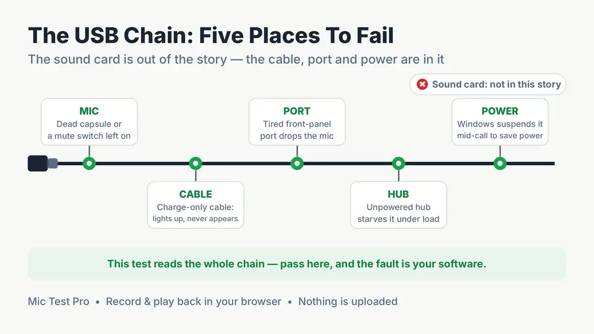
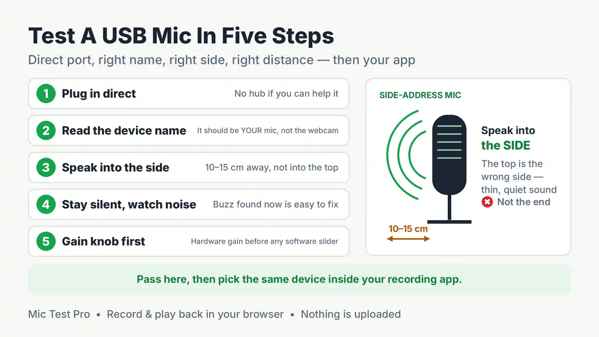
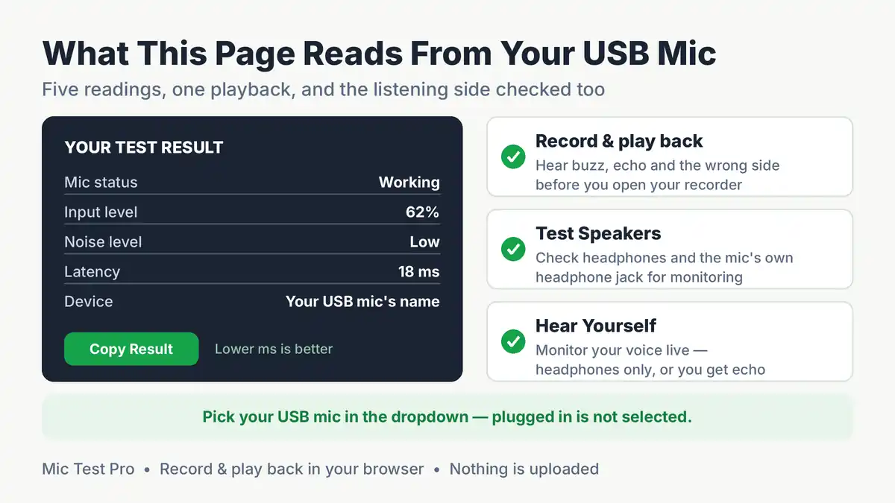
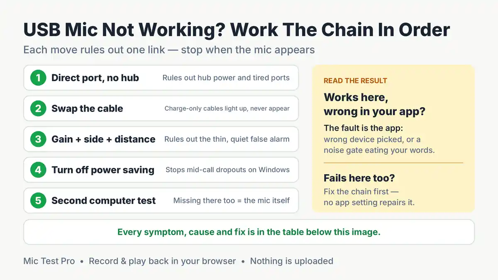

Why Test A USB Microphone Separately?

Short answer: a USB mic removes your computer's sound card from the story, but adds a new chain of suspects — mic, cable, port, hub, power — and this test tells you which link is failing.
USB microphones plug in with their own audio interface built in, so problems can come from the mic itself, the USB port, or the cable — not your computer's sound card. This test isolates the microphone so you can confirm it's working before blaming your recording software.
It's a useful first step before opening a DAW, streaming software, or a podcast recording app, so you know any remaining issue is in the software's settings, not the hardware. Streamers and podcasters lose whole sessions to problems this thirty-second check catches: the mic that quietly fell back to a webcam mic, the gain knob nudged in a bag, the hub that drops the mic whenever the camera wakes up.
It also shows the device name your browser sees. If the name is your webcam or your monitor instead of your USB mic, you have found your problem before you have even spoken.
How To Test A USB Microphone

Plug the USB microphone directly into your computer, avoiding hubs if possible. If it only works through a hub, note that — it is a clue about power, and it is covered below.
Click "Start Mic Test" and allow microphone access. Read the Device name shown: it should be your USB microphone. If it names something else, your system input is set elsewhere — fix that in Sound settings first.
Speak or sing at your normal recording distance and volume. For most USB mics that means 10–15 cm away, speaking into the side of the mic, not the top — check which way yours faces, because speaking into the wrong side is a classic cause of a thin, quiet sound.
Stay silent for a few seconds and watch the Noise Level. Any buzz, hum or hiss you can find now, alone, is far easier to fix than the same noise found in a finished recording.
If the input level is too low, check the mic's physical gain knob before adjusting software settings — hardware gain set right gives you a cleaner signal than software gain rescuing a whisper. Then set the same device inside your recording or streaming app.
USB Mic Checks This Tool Covers

Input Level
Confirms the mic is capturing sound at a usable volume — and at your real speaking distance. USB mics are voiced for close speech, so a level that only looks right when you lean in double-distance is telling you your placement, not your gain, needs changing.
Noise Floor
Flags high background noise before you start a recording session. With USB mics the noise that matters is often electrical — a faint buzz or whine under everything — rather than the room itself. Silence plus this page's noise reading tells you whether you have a room problem or a power problem, and they have completely different fixes.
Device Recognition
Shows whether your browser correctly identifies the USB mic by name. This single line settles the most common USB argument — 'it is plugged in' versus 'the computer is using it'. Plugged in is not selected, and selected is not necessarily your mic. USB microphones are USB Audio Class devices (Base Class 10h) — the class covers audio data and Gain and Tone control, so the mic registers as a proper audio device, not a generic USB gadget.
Real Latency Reading
Reports actual measured audio latency from your system's audio engine. The reading is in milliseconds (ms): the delay between speaking and your browser receiving the sound, and lower is better. USB mics are quick, but hubs and long chains of adapters add up, and latency you can measure here is latency you would otherwise discover while monitoring your own voice mid-stream — a special kind of distracting.
Record And Play Back
Press Record Voice, speak at your real recording distance, then stop and listen to the playback. Buzz, hum, room echo and speaking into the wrong side of the mic are all obvious on playback before you open your recording software. Recordings run up to 60 seconds, you can download the clip as a WAV file, and the audio never leaves your browser.
Speaker Test
Check the listening side too. The Test Speakers button plays a short test sound through your chosen output, so you can confirm your headphones or speakers work before a session — useful when your USB mic has its own headphone jack for monitoring.
Choose Your Microphone
A USB mic rarely travels alone — webcam mics and built-in mics are usually connected too. Pick your USB mic from the Microphone dropdown before you start, so the test measures the right device instead of whichever one the browser found first.
Hear Yourself
Turn on Hear Yourself to monitor your own voice live while you speak, the way your listeners will hear it. Use headphones for this — on speakers, the mic picks up the sound coming out and you get echo.
USB Mic Problems: Problem, Cause, Fix

| Problem | Most likely cause | Fix | Check on this page |
|---|---|---|---|
| Mic not in the Sound input list at all | A charge-only or damaged cable, a failing port, or an unpowered hub | Direct port on the computer, different known data cable, then a second computer to decide whether the mic itself has failed. | Device name missing from the input list |
| Mic appears as a speaker only | The mic's headphone-monitoring half registered first and caught your eye — or its input half failed to register | Look in the input list under the same product name. Still missing? Unplug, restart, reconnect so both halves register together. | Device name appears under output, not input |
| Mic vanishes mid-call or mid-recording | USB power saving suspending the device, or a hub running out of power | Plug in directly. On Windows, untick 'Allow the computer to turn off this device' for the USB Root Hub in Device Manager. | Input Level dies mid-session |
| Buzzing or humming under your voice | Power noise arriving through USB, made louder by high gain | Different rear port, no hub, lower hardware gain. A powered hub (with its own plug) often cleans up a noisy machine. | Noise Level high even in silence |
| Whine that changes with what's on screen | Graphics card load leaking into USB power | Try ports away from the GPU side of the machine and lower the gain; this one is a port-and-power problem, not a mic fault. | Noise Level rises with GPU load |
| Very low level even at full volume | Speaking into the wrong side of the mic, or the hardware gain is down | Most USB mics are side-address: speak into the side, 10–15 cm away. Then raise the mic's own gain knob before any software slider. | Input Level low at 10–15 cm |
| Works here, wrong in OBS or your recorder | The app selected a different device or a filter is cutting you up | Choose the mic by name in the app's audio settings and disable its noise gate/suppression for one test recording. | This page hears you — the fault is in the app |
| Crackles when the cable moves | A cable or connector wearing out | Replace the cable. Cheap, quick, and the correct fix — no setting repairs a broken conductor. | Noise Level spikes when the cable moves |
Condenser Or Dynamic: Which USB Mic Suits Your Room?
Short answer: in a quiet, treated room, a condenser sounds detailed and open. In an ordinary room — fans, traffic, thin walls, a mechanical keyboard — a dynamic mic usually wins, because it simply refuses to hear most of your room.
| Condenser | Dynamic | |
|---|---|---|
| How it hears | Very sensitive — captures detail and the whole room with it | Less sensitive — focuses on what's close and in front of it |
| Best distance | 15–30 cm works, but it hears everything at that range | Close: 5–15 cm, like a radio presenter |
| Untreated rooms | Struggles — echoes, fans and street noise all get recorded | Forgiving — rejects a lot of room noise by design |
| Background noise | Needs a quiet space or software suppression | Naturally quieter recordings in real rooms |
| Gain needed | Little — often no extra gain required | More — some quiet dynamic mics need a strong preamp or booster on XLR setups |
| Handles loud sounds | Can distort on very loud sources if gain is off | Excellent — the classic choice for shouting, drums and loud amps |
| Typical home use | Podcasts and voice work in a treated or quiet room | Streaming and calls in an ordinary, noisy room |
Whichever you own, this test tells you how it behaves in your room rather than in a reviewer's studio: check the noise reading while silent, then at your speaking distance. A condenser showing high noise at silence in your room is not a bad mic — it is the wrong match, or a room asking for soft furnishings and a closer mic position. And no, you do not need an audio interface for either type in USB form: the interface is already inside the mic. Interfaces belong to the XLR versions of these same designs.
USB Microphone Test FAQs
Why isn't my USB microphone showing up in Sound input settings?
Work along the chain. Plug the mic directly into the computer, not a hub, and try a second port — hubs and tired front-panel ports are the top cause. Try a different cable if yours is detachable; charge-only cables (common with phones) carry power but no data, and a mic on one lights up yet never appears. On Windows check Settings > System > Sound > Input; on a Mac, System Settings > Sound > Input. If the mic appears nowhere after a direct port and a known data cable, test it on another computer: if it is missing there too, the mic itself is faulty.
Why isn't my USB microphone detected at all?
Try a different USB port, ideally directly on the computer rather than a hub, and confirm the mic's status light is on. Then re-run this test. If the light is on but the computer sees nothing, suspect the cable — swap it before anything else, because a power-only or damaged cable produces exactly this symptom.
Why is my USB mic detected as a speaker but not as a microphone?
Many USB mics are two devices in one box: a microphone (input) and a headphone jack for monitoring (output). Your computer lists both, and the output half often appears first, which makes it look as if the mic registered as 'just a speaker'. Look in the input list specifically — Windows: Settings > System > Sound > Input; Mac: System Settings > Sound > Input tab. The mic is usually there under the same product name. If the input half is genuinely missing while the output half works, re-pair the connection: unplug, restart the computer, and plug the mic in again so both halves register cleanly.
Why does my USB microphone randomly stop being detected?
The usual suspect is power. USB ports and hubs ration power, and Windows can suspend a USB device it thinks is idle — a setting called USB selective suspend — right in the middle of a call. Hubs make it worse: an unpowered hub sharing several devices may feed the mic enough to register, then drop it under load. Plug the mic directly into the computer, and on Windows open Device Manager, find the USB Root Hub entries, and untick 'Allow the computer to turn off this device to save power' in their Power Management tabs. A cable that is failing slowly produces the same random drops — swap it to rule that out.
How do I fix buzzing or humming from my USB microphone?
Buzz in a USB mic is usually power noise arriving through the cable, not the mic capsule. Fixes in the order worth trying: plug the mic into a different USB port, ideally on the back of a desktop PC; remove hubs and extension cables; lower the mic gain — buzz that only appears at high gain is the noise floor being amplified; move the cable away from power bricks and graphics-card-heavy loads, since a busy GPU can add a whine that changes pitch with what is on screen. If the buzz exists on another computer too, the mic or its cable is the problem. If it only exists on one machine, that machine's USB power is the problem, and a powered USB hub (one with its own plug) often cleans it up.
My USB mic input level is very low, what should I check?
Check the gain knob on the mic if it has one, and confirm input volume is turned up in your OS sound settings, not just in your recording software. Then check distance and direction: most USB mics are side-address (you speak into the side, not the top) and are built for a 10–15 cm distance. Speaking into the end of a side-address mic can cost you most of your level and all of your clarity.
Do I need an audio interface with a USB microphone?
No. A USB microphone already contains a simple audio interface inside it — that is what the USB plug is for. An external audio interface is the partner for XLR microphones, which have no digital output of their own. You only enter interface territory if you outgrow USB: you want an XLR mic, two mics at once, or hardware gain and monitoring controls. Until then, an interface would add cost and give your current mic nothing to plug into.
What is a condenser microphone?
A condenser microphone uses a thin, electrically charged diaphragm that reacts to very small sound changes, which is why it sounds detailed — and why it also hears your whole room. The condenser on a microphone is that capsule-and-diaphragm assembly: it needs power to hold its charge, and in a USB condenser mic that power comes through the USB cable, so there is no separate power box. A condenser mic suits a quiet room at 15–30 cm; in an ordinary noisy room a dynamic mic usually wins because it refuses to hear most of the room.
Can I use this test before streaming or recording a podcast?
Yes. It's a good pre-check for input level and background noise before opening OBS, a DAW, or recording software, isolating the mic from your app's own settings. If this test is clean and the app still sounds wrong, the fault is in the app's device selection or filters — streamers often discover an OBS noise gate or suppression filter eating their first words this way.
How do I know whether the problem is my mic or my software?
This page is the dividing line. The test reads your mic through your browser with no recording software in between. Pass here and fail in your app means the app is using the wrong device or a filter is damaging the sound. Fail here as well means the chain below the app — mic, cable, port, or system input setting — needs fixing first, and no software setting will change that.
Can I test my speakers with this tool too?
Yes. Press Test Speakers and the tool plays a short test sound through your chosen output. If you hear it clearly, your headphones or speakers work; if you hear nothing, check the output device and volume in your system sound settings. Many USB mics have a headphone jack for monitoring — this check confirms that side of the setup before you record.